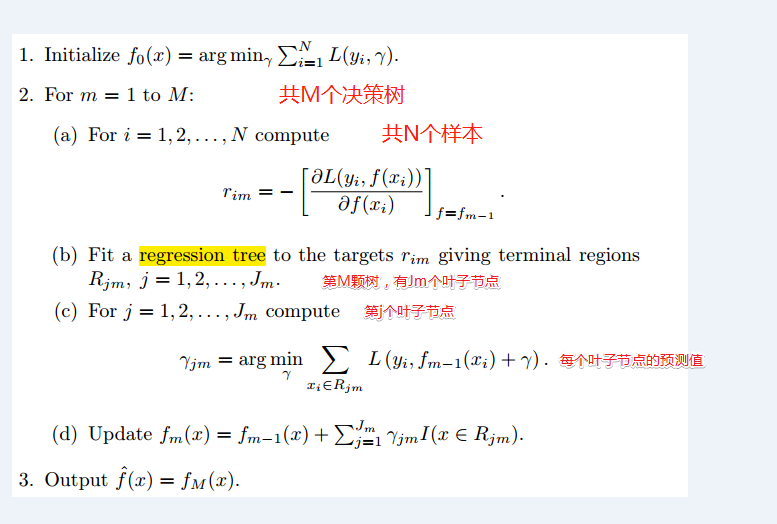

GBDT(Gradient Boosting Decision Tree) 又叫 MART（Multiple Additive Regression Tree)，是一种迭代的决策树算法，该算法由多棵决策树组成，所有树的结论累加起来做最终答案。它在被提出之初就和SVM一起被认为是泛化能力（generalization)较强的算法。该模型被广泛的应用与ctr预估和搜索排序中。
本文按照Gradient（梯度下降法） -> Boosting（加性模型） -> Decision Tree （决策树）的顺序描述GBDT这个模型。
Gradient（梯度下降法）
对于一个优化目标函数
$$
\min_{\Theta} J(\Theta)
$$
其中 $\Theta$ 为参数。求解$\Theta$ 的迭代公式为:
$$
\Theta^{i+1} = \Theta^i - \alpha \nabla J(\Theta)|_{\Theta^i}
$$
其中 $\alpha$ 为步长。
Boosting
Boosting，迭代，即通过迭代多个模型来共同决策。它
- 是一种集成学习方法
- 是一种算法框架
- 是一种加性模型
其中比较经典的算法有 AdaBoost，RealAdaBoost。
Boosting 使用多个模型的预测结果的累加来作为最终的预测结果(即，加性模型)。比如在预测人的年龄任务中，A的真实年龄是18岁，但第一个模型的预测年龄是12岁，差了6岁，即残差为6岁。那么在第二个模型里我们把A的年龄设为6岁去学习，如果第二个模型真的能把A分到6岁的叶子节点，那累加两棵树的结论就是A的真实年龄；如果第二棵树的结论是5岁，则A仍然存在1岁的残差，第三棵树里A的年龄就变成1岁，继续学。这就是 Boosting 的意义。
关于这个方面的理论这里简单介绍如下：
对于一个预测任务，使用了M个模型， 那么对于一条数据$x_i$ 的预测值可以表示为：
$$
\hat y_i = \sum_{m=1}^M \beta_m b(x_i, \gamma_m)
$$
其中：
- $b$ : 基础模型， 对于分类任务来说，也称为 基分类器。
- $\beta$: 每个基础模型在总的预测结果中占有的权重。
- $\gamma$: 每个基础模型的参数。
那么一个预测任务来说，总的优化目标就是
$$
\min_{\{\beta_m, \gamma_m\}_1^M} \sum_{i=1}^N L[y_i, \sum_{m=1}^M \beta_m b(x_i, \gamma_m)]
$$
其中： $N$ 为训练样本量。
Gradient + Boosting
下面推导 Gradient 和 Boosting 是怎么结合起来的。
同样还是对于一个预测任务，给定样本量为 $N$ 样本集, 求预测模型为 $f(x)$。 即我们的学习目标是:
$$
\vec f = {\arg\min}_{\vec f} \mathcal L(\vec y, \vec f) ={\arg\min}_{\vec f} \sum_{i=1}^N L[y_i, f(x_i)]
$$
其中:
- $\vec f = \{f(x_1), f(x_2), \dots , f(x_N) \}$ , 且函数对于所有的样本 $x_i$ 是同一个函数, 向量的长度和样本量相同。
- $\vec y = y_1, y_2, \dots, y_N $ , 向量的长度和样本量相同。
- $\mathcal L(\vec y, \vec f)$ 是整个样本集的损失函数。
即，优化目标为：在整个样本集上的损失最小。 下面借鉴梯度下降法的原理， 认为 $\vec f$ 为参数, 迭代求$\vec f$。 类比如下：
| $ \min_{\vec f}\mathcal L(\vec y, \vec f) $ | $\min_{\Theta} J(\Theta)$ |
|---|---|
| $\vec f$ | $\Theta$ |
| $\mathcal L$ | $J$ |
$\min_{\vec f}\mathcal L(\vec y, \vec f)$ 在$ \vec f_{m-1}$ 处的梯度：
$$
\vec g_m = [\frac{\partial \mathcal L(\vec y, \vec f)}{\partial {\vec f}}] | _{\vec f = \vec f_{m-1}}
$$
那么求解$\vec f_m$ 的迭代公式为:
$$
\vec f_m = \vec f_{m-1} + \alpha_m (- \vec g_m)
$$
其中： $\alpha$ 为每一步的步长， 在GBDT里面使用的是统一的步长，即，对于所有的 基础模型 使用同一个预设的步长(超参)。
那么:
$$
\vec f_m = \alpha_0 (- \vec g_0) + \alpha_1 (- \vec g_1) + \alpha_2 (- \vec g_2) + \dots + \alpha_m (- \vec g_m) \tag 1
$$
对于上式我们可以这样理解：
- 每一步的 $(- \vec g)$ 都表示一个基础模型的预测结果, 在GBDT中这个基础模型就是 决策树。那么最终的模型预测结果，是所有单个模型预测结果的累加；
- 增加新的模型，使结果在前一步的基础上更加逼近最优点；
- 新模型训练的是上一个模型的残差。
这就是 Gradient + Boosting 的数学推导。
GBDT
DT在这里指的是决策树(Decesion Tree)， 而决策树有分为 分类树(Classification Tree) 和 回归树 (Regression Tree)。 实际上在GBDT模型中使用的是回归树，这也是为什么GBDT又名 MART(Multiple Additive Regression Tree) 的原因。
Decesion Trees partition the space of all joint predictor variable values into disjoint regions $R_j, j = 1, 2, \dots, J$ , as represented by the terminal nodes of the tree. A constant $\gamma_j$ is assigned to each such region and the predictive rule is
$$
x \in R_j \Rightarrow f(x) = \gamma_j
$$
决策树可以被定义为：
$$
T(x; \Theta) = \sum_{j=i}^J \gamma_j I(x \in R_j)
$$
其中： $\Theta = \{R_j, \gamma_j\}_1^J $ 表示模型参数, $J$ 表示决策树叶子节点的数量(通常是通过限制树的深度限制叶子节点的数量)。
决策树就是将样本的属性映射到一个具体的类别(分类树)或者score(回归树)。
使用 若干颗回归树对 式 1 中的所有梯度 $-g$ 进行替换即得到一个GBDT模型的表示方法。如下：
$$
\begin {align}
\vec f_m &= \alpha_0 (- \vec g_0)& +& \alpha_1 (- \vec g_1)& +& \alpha_2 ( - \vec g_2)& + \dots +& \alpha_m (- \vec g_m) \\
\downarrow \\
\vec f_m &= \alpha_0 (T_0)& +& \alpha_1 (T_1)& +& \alpha_2 (T_2)& + \dots +& \alpha_m (T_m) \\
\end {align}
$$
通常来说，一个机器学习模型的训练实际上就是寻找模型参数的过程。那么GBDT模型的参数是什么呢？
- parameters Including structure of each tree, and the score in the leaf； 或者说GBDT模型的参数就是模型中的所有决策树 $\{T_0, T_1, T_2, \dots, T_m\}$
- 与一般的模型(如LR)不同，Instead learning weights , we are learning functions(trees) 。
GBDT的算法流程如下:

GBDT 在预处理中的的应用
GBDT作除了可以解决其分内应该解决的问题（分类任务，回归任务）外，还可以用来进行数据预处理，如：
特征筛选： GBDT可以发现有区分性的特征。由于GBDT基础是决策树，所以它也觉有决策树的特点，决策树或者随机森林可以用于特征选择，选择的依据就是特征重要性。其中常用道的特征重要性衡量指标有两个：
- Gini:(Mean Decrease in Impurity (MDI))
- •Permutation:(Mean Decrease in Accuracy (MDA)
详细内容这里不论述了。
使用方法可以参考这片blog 使用GBDT选取特征, 多年前我曾经使用其中的数据集合，做过相同的实验，奈何代码找不到了，只有实验结论，且于blog中的相近。当时的结论如下：
特征组合
GBDT可以对现有的特征进行特征组合，直接生成新的更有效的特征，省去了人工特征组合的麻烦。通过GBDT生成的特征，可直接作为LR的特征使用，省去人工处理分析特征的环节，LR的输入特征完全依赖于通过GBDT得到的特征。这个方法被facebook用来做ctr预估。同时也有使用GBDT+FM的方案，在 2014 Kaggle CTR竞赛冠军就是使用GBDT+FM。GBDT进行特征组合的原理比较简单，其本质还要追溯到决策树原理。 对于一个决策树来说，其本质是将特征空间分割成若干个不相交的离散区域，对于每一个区域赋予一个预测值。
如上图所示，假设我们使用的训练样本只有两个特征，即我么的样本空间就是右图那样的一个平面。使用一颗决策树训练后得到左图所示的决策树，其四格叶子节点实际上就是将右图那样的特征空间分割称为四个区域。其一一对于关系如图中的数字所示。一个样本必然会落在四个叶子节点中的一个内。
当我们使用GBDT时，将会有多颗决策树，如下图所示，基于训练样本得到由三颗决策树组成的GBDT模型。
对于任何一个样本(record A)，该样本将会在每颗决策树中落到一个节点上，假设 record A 落在了 3, 5, 13 这三个叶子节点上。那么 record A 的新特征为 :(0,0,1,0, 1,0,0,0, 0,0,0,1)。note： 新特征中每一位对应一个叶子节点，每四位对应一颗决策树， 1 表示样本落在了相应节点上，0 表示样本没有落在了相应节点上。
参考资料
The Elements of Statistical Learning